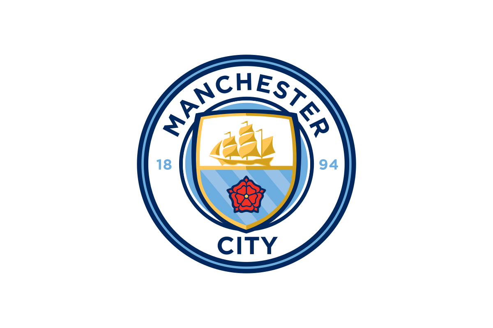
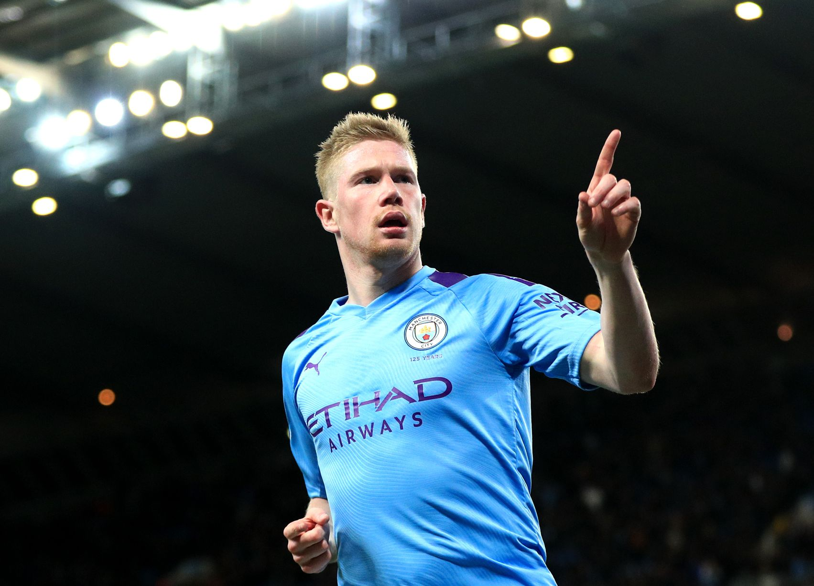
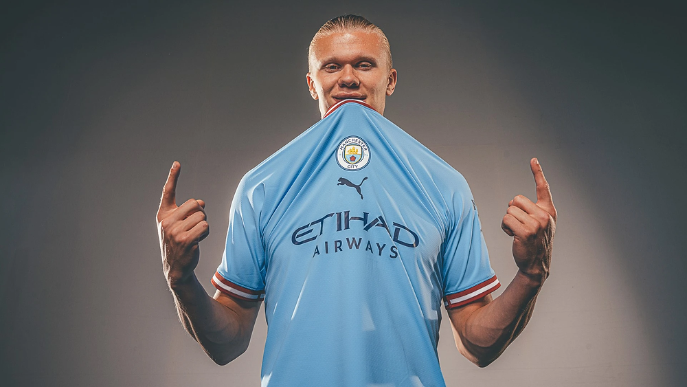
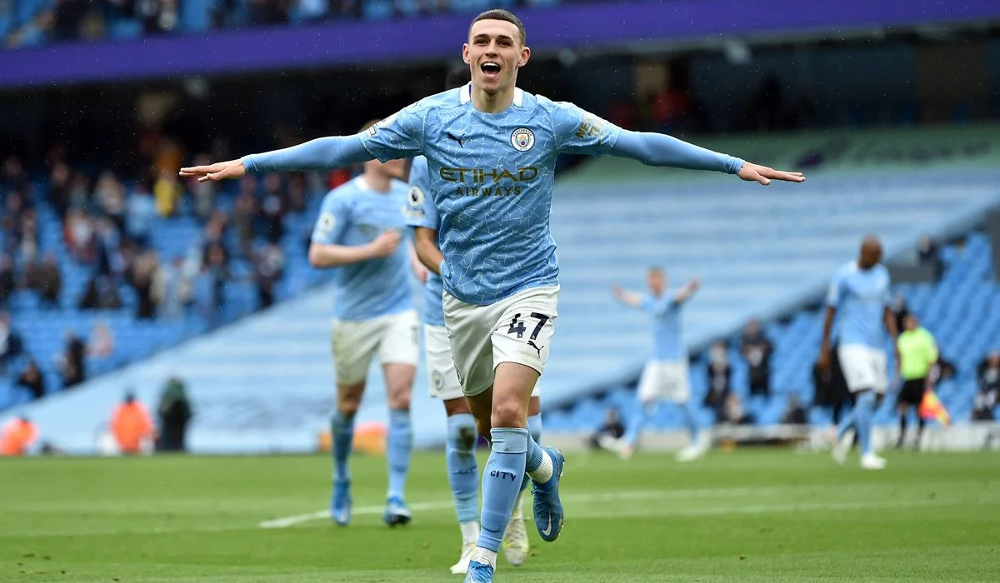
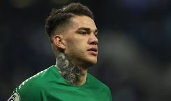
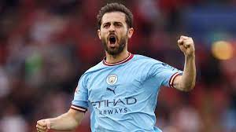
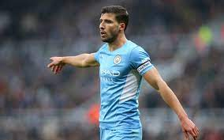
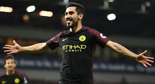
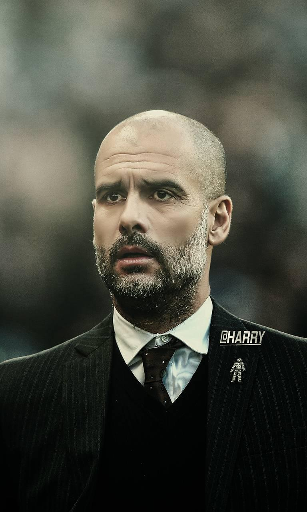

|  | BLUE HORIZON |
Know what its 4 in the last 5 years. Yeah thats right,THE PREMIER LEAGUE!
Until now we have won 29 major honours throughout our history: eight League titles, six FA Cups, eight League Cups, six FA Charity/Community Shields, and one European Cup Winners' Cup.
Thanks to our team and Coach pep,we the fans are gratefull.
| Image | Name | Position | Nationality | Strong Foot |
|---|---|---|---|---|
|  | DeBruyne | AMF | Belgium | Right Foot |
|  | Erling Haaland | CF | Norway | Left Foot |
|  | Phil Foden | CMF | England | Left Foot |
|  | Ederson | GK | Brazil | Left Foot |
|  | Bernardo Silva | CMF | Portugal | Left Foot |
|  | Ruben Diaz | CB | Portugal | Right Foot |
|  | Ilkay Gundogan | CMF | Germany | Right Foot |
|  | On 1 February 2016, Manchester City signed Guardiola to a three-year contract for the start of the 2016–17 season. On 13 August 2016, Pep won his first 2016–17 Premier League season match 2–1 against Sunderland. On 11 September 2016, Guardiola won his first Manchester derby as a manager in a 1–2 victory; this was also his sixth win against his "rival" manager José Mourinho. |
| PEP GUARDIOLA Nationality:Spain Contract till 2023 Matches:354 Won:257 Drawn:45 |
|
Manchester City v/s WestHam United Home 1 Sept 2022 8 PM |